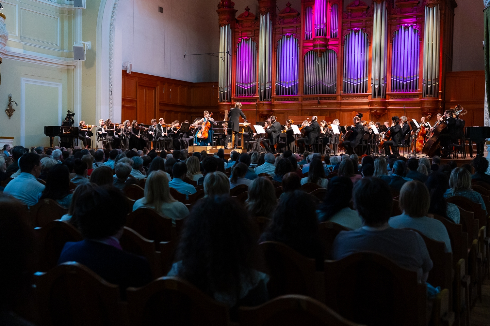
Об Академии
Вокруг одного инструмента возникает целый мир
Виолончельная академия — независимая профессиональная институция, созданная для системного развития виолончельной культуры. Сегодня Академия представляет собой одно из крупнейших в мире объединений виолончелистов. Её официальное сообщество во «ВКонтакте» насчитывает более 14,5 тысячи участников и является самой крупной русскоязычной площадкой, посвящённой виолончели. Академия объединяет музыкантов разных поколений и школ, развивает профессиональные связи между регионами России и последовательно расширяет международное сотрудничество.
В работе Академии соединяются образовательные и концертные проекты, поддержка молодых музыкантов, исследования, методическая работа и музыкальное просветительство. Участниками программ становятся дети и студенты, молодые и состоявшиеся артисты, педагоги, исследователи и композиторы. Академия также открыта для любителей и слушателей, которые хотят глубже познакомиться с инструментом и стать частью сообщества.
Несмотря на название, Виолончельная академия — не учебное заведение с постоянным набором и единой для всех траекторией. Она дополняет работу школ, колледжей и консерваторий. Академия соединяет людей из разных городов и поколений, открывает доступ к новым знаниям, сценам и профессиональным связям. Так появляются возможности, выходящие за пределы обычного учебного процесса.
Для многих знакомство с Академией не заканчивается одним событием. Участники возвращаются в следующие проекты уже как артисты или педагоги, а начавшиеся здесь профессиональные связи получают продолжение. Высокая профессиональная планка сочетается с уважительной и доброжелательной атмосферой — без снижения требований, высокомерия и искусственной дистанции.
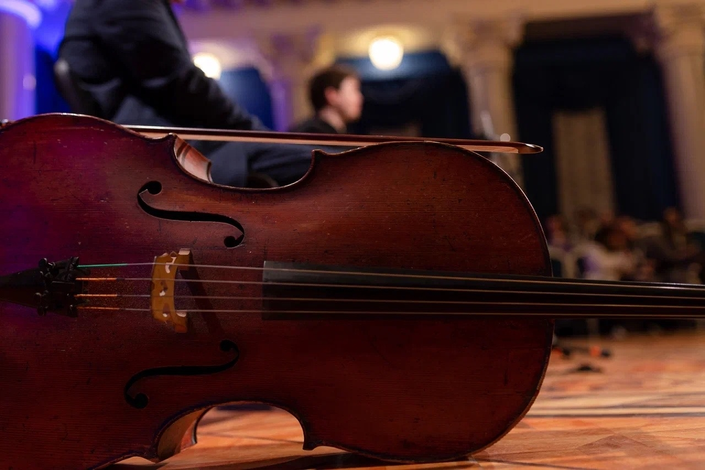
Направления работы
Главный образовательный проект — ежегодная Всероссийская виолончельная академия. Она собирает ведущих исполнителей и педагогов, молодых музыкантов и слушателей из разных городов. В течение нескольких дней проходят индивидуальные мастер-классы, лекции, репетиции и творческие лаборатории. Участники знакомятся с разными исполнительскими школами и получают содержательную профессиональную обратную связь.
Всероссийская виолончельная академия — одно из немногих событий такого формата, где слушателям уделяется не меньше внимания, чем непосредственным участникам мастер-классов. Слушатели не остаются пассивной аудиторией: они могут участвовать в обсуждении и делиться собственными наблюдениями. Поэтому ежегодная Академия становится большим профессиональным форумом, куда приезжают виолончелисты со всей России и из других стран.
Образовательная работа Академии продолжается в течение всего года и не привязана к одной площадке. Мастер-классы проходят в собственном пространстве на Китай-городе; Академия также организует выездные занятия и участвует в партнёрских программах на других площадках. Одним из первых образовательных проектов стала «Новая школа», впервые представившая молодых состоявшихся исполнителей в роли педагогов. Большинство мастер-классов транслируется в прямом эфире, а затем остаётся доступным в записи, чтобы к материалам можно было возвращаться во время самостоятельной работы. Кроме того, Академия специально создаёт образовательные видеопрограммы для тех, кто не может приехать на очные занятия. Уже вышел практический курс «Техника игры на виолончели» с Кириллом Кравцовым. Также Академия выпускает теоретические видеолекции об истории виолончели, в том числе цикл «История виолончельного исполнительства» с Татьяной Лукашиной; готовятся и другие программы.
Камерные концерты проходят в собственном пространстве Академии на Китай-городе. Другие программы создаются для крупных залов и гастролируют по России. Одна из центральных серий — «Звёзды Всероссийской виолончельной академии»: в ней молодые артисты выступают вместе с ведущими исполнителями и оркестрами, продолжая профессиональное развитие уже на сцене.
Открытые прослушивания позволяют Академии системно знакомиться с новым поколением музыкантов из разных городов и школ. Исполнителей, ярко проявивших себя, приглашают в конкретные концертные и образовательные программы. Некоторые из этих знакомств перерастают в сотрудничество на несколько сезонов.
Институт исследований и методологии работает с историей виолончельного искусства и его современным состоянием. Архивные материалы становятся основой для статей, авторских исследований и будущих нотных изданий. Отдельная задача — возвращать в профессиональный оборот важное педагогическое наследие. О сегодняшней виолончельной жизни рассказывает «CelloЖурнал» — печатное и электронное издание, выпуски которого выходят раз в квартал.
Медиа — самостоятельное направление работы Академии, а не только сопровождение очных мероприятий. Одни материалы позволяют увидеть концерт или мастер-класс тем, кто не присутствовал лично. Другие изначально создаются для экрана: это фильмы, интервью и истории о людях виолончельной культуры. Отдельную часть составляют образовательные видеокурсы.
Международные программы строятся на постоянном профессиональном обмене. Иностранные исполнители и педагоги приезжают на проекты Академии в Россию, российские музыканты участвуют в зарубежных фестивалях и совместных программах. Так современная российская виолончельная школа получает новые связи и площадки для представления за рубежом.
Работа с регионами — одно из постоянных направлений Академии. В разных городах проходят концерты и мастер-классы, выстраивается сотрудничество с музыкальными школами и филармониями. Благодаря этим связям новые имена из регионов становятся заметнее в общем профессиональном пространстве.
Инструментальный фонд Виолончельной академии — новое направление. Собранные в нём инструменты будут предоставляться музыкантам для учёбы и профессиональной работы.
Постоянный дом Академии находится в центре Москвы, на Китай-городе. Здесь разместились офис, камерный зал и репетиторий. Собственное пространство обеспечивает ежедневную работу институции. Музыканты приходят сюда заниматься и готовиться к выступлениям; в течение года здесь проходят мастер-классы и камерные события.
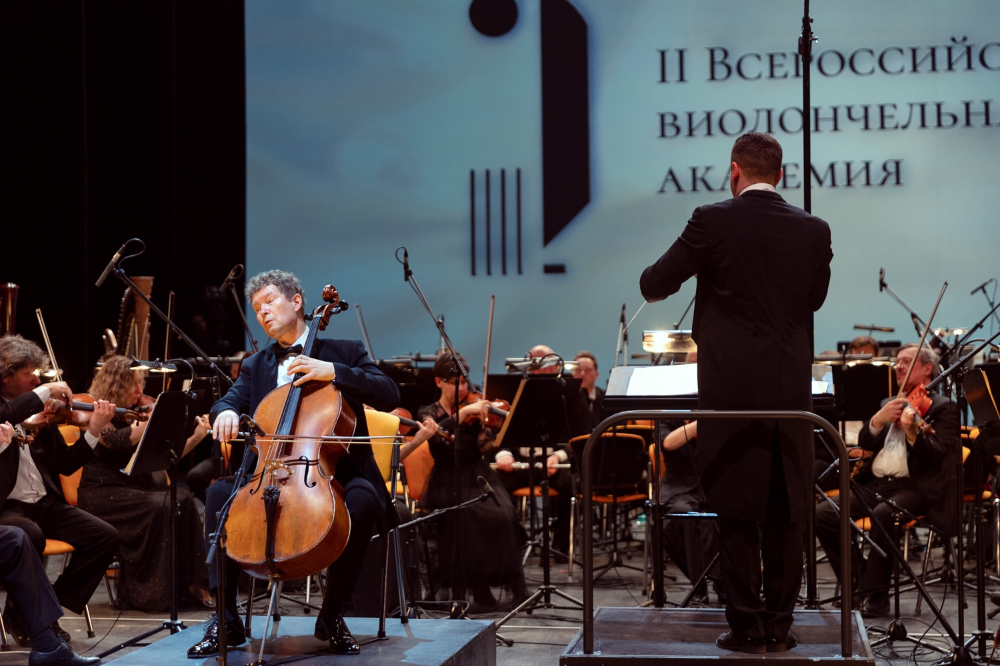
Академия и ежегодный форум
Всероссийская виолончельная академия — главное ежегодное образовательное событие. Оно проводится с 2023 года и на несколько дней собирает ведущих мастеров, молодых музыкантов, педагогов и слушателей.
Виолончельная академия — постоянно действующая институция. Ежегодный форум — её главный, но далеко не единственный проект: работа продолжается в течение всего сезона в Москве, в регионах России и за рубежом.
Академия в цифрах
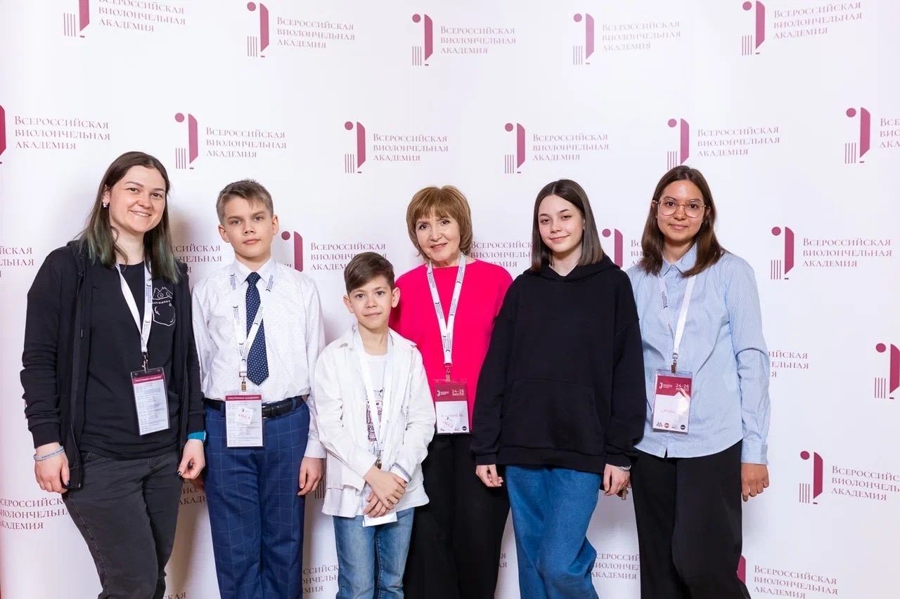
Люди Академии
За Академией стоят очень разные люди: основатель и команда, виолончелисты и педагоги, артисты других специальностей, исследователи, композиторы и приглашённые спикеры. Всё началось в 2015 году с интернет-сообщества, которое создала виолончелистка Анастасия Ушакова. Позже из него выросла постоянно действующая институция.
Среди виолончелистов и педагогов, участвовавших в проектах Академии, — Александр Князев, Александр Рамм, Борис Андрианов, Кирилл Родин, Кирилл Кравцов, Андрей Спиридонов, Мария Журавлёва, Олег Бугаев, Ольга Галочкина, Алексей Васильев, Евгений Румянцев, Борис Лифановский, Мария Зайцева, Иван Сканави, Иван Сендецкий, Василий Степанов, Георгий Гусев, Павел Вишневский, Илья Яшин, Татьяна Лукашина, Габриэль Джебран Якуб, Фаусто Сольчи, Хассан Эль Молла, Фернандо Ариас и Се Гуанъюй.
В образовательных, концертных и дискуссионных программах Академии также участвовали музыканты других специальностей и представители музыкальной культуры: Равиль Ислямов, Леонид Железный, Анна Савкина, Геннадий Акинфин, Михаил Усов, Павел Романенко, Александр Ключко, Варвара Кутузова, Лев Журавский, Эрик Мирзоян, Иван Никифорчин, Михаил Голиков, Георгий Левинов, Иван Щербак и многие другие.
Академия работает с ведущими концертными площадками, учебными заведениями, оркестрами, фестивалями, издательствами и медиа. В числе партнёров — Москонцерт, Московский музыкальный театр «Геликон-опера», Московская государственная консерватория имени П. И. Чайковского, Санкт-Петербургская государственная консерватория имени Н. А. Римского-Корсакова, Центральная музыкальная школа — Академия исполнительского искусства, Московский государственный академический симфонический оркестр, Симфонический оркестр Ленинградской филармонии, Российский государственный музыкальный телерадиоцентр «Орфей», фестиваль VIVACELLO, издательство «Музыка», Ассоциация лауреатов Международного конкурса имени П. И. Чайковского, TV BRICS, журнал «Музыкальная жизнь», ClassicalMusicNews, интернет-издания Amadeus и Music Live, Государственный мемориальный музыкальный музей-заповедник П. И. Чайковского, Российский духовно-культурный православный центр в Париже, Accademia Filarmonica del Mediterraneo и Казахский национальный университет искусств. Этот круг шире: в него входят региональные филармонии, музыкальные школы, колледжи, конкурсы и фестивали.
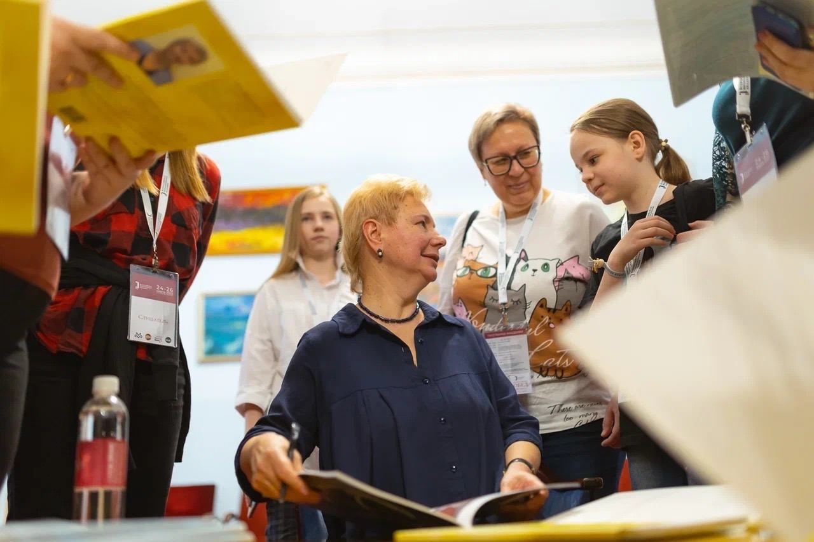
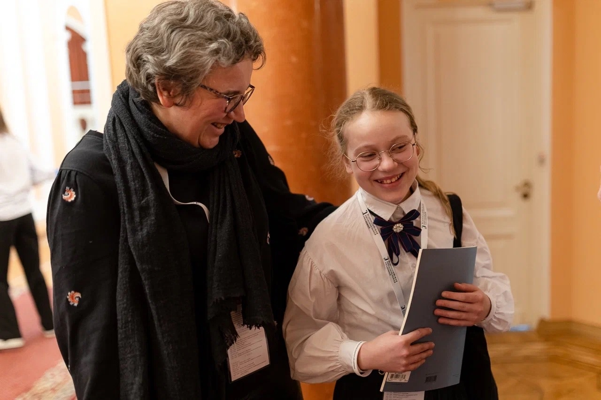
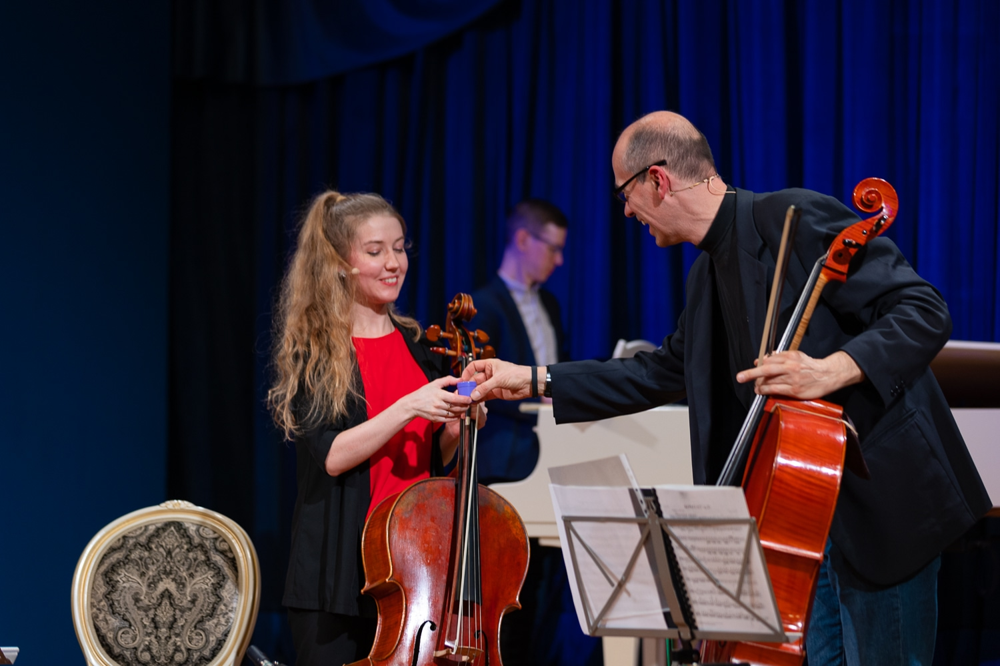
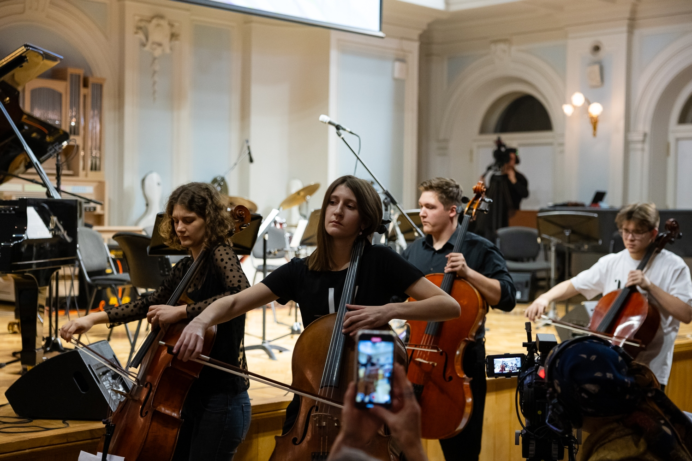
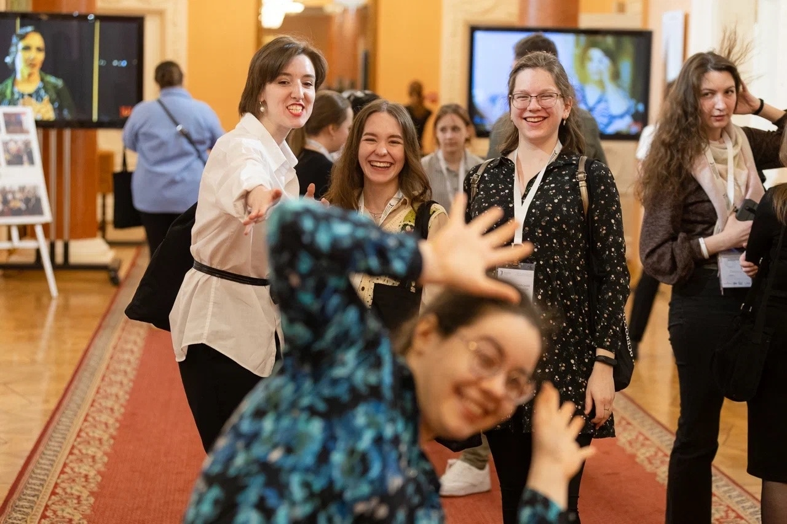
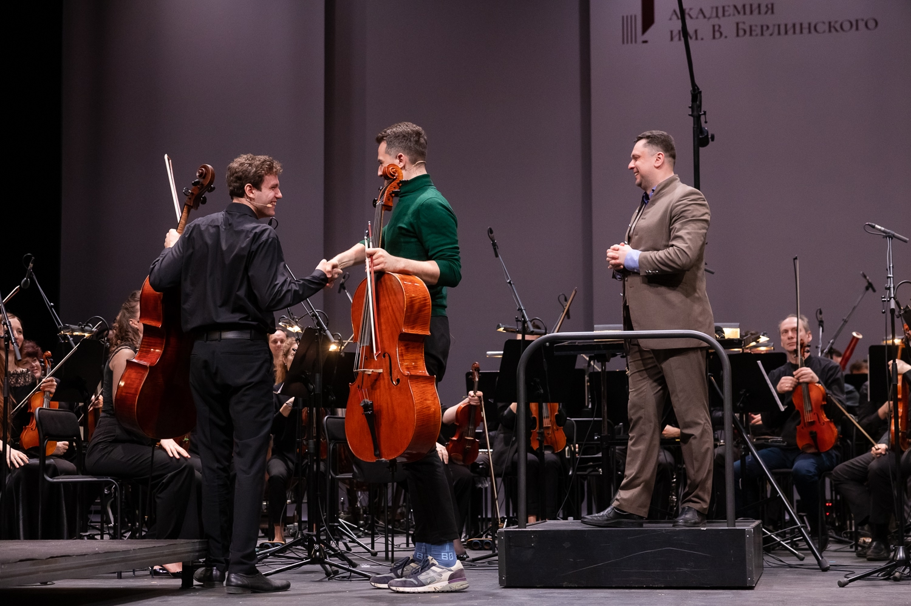
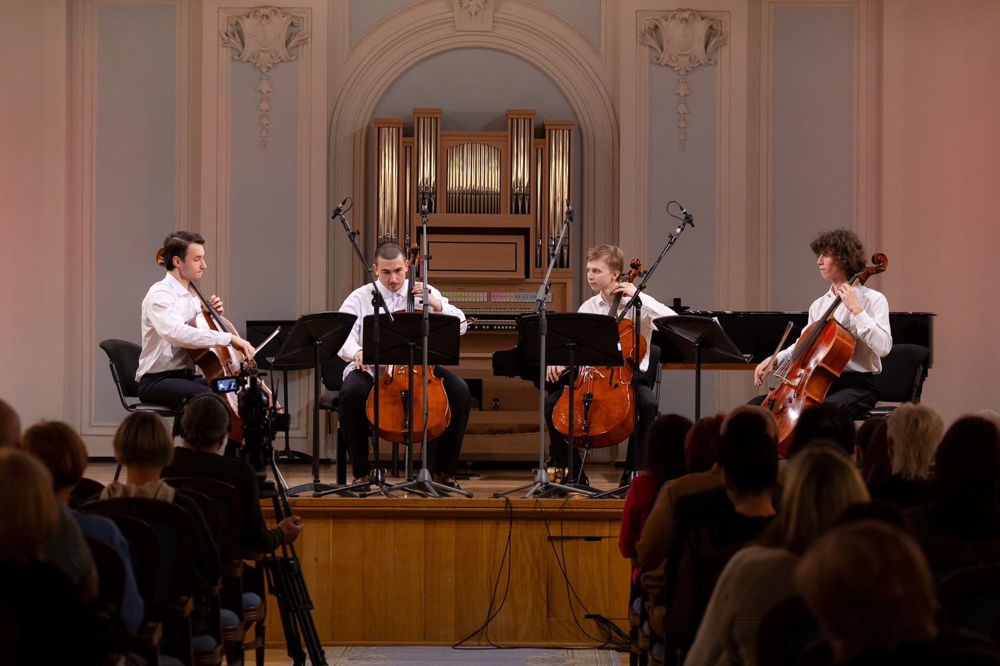
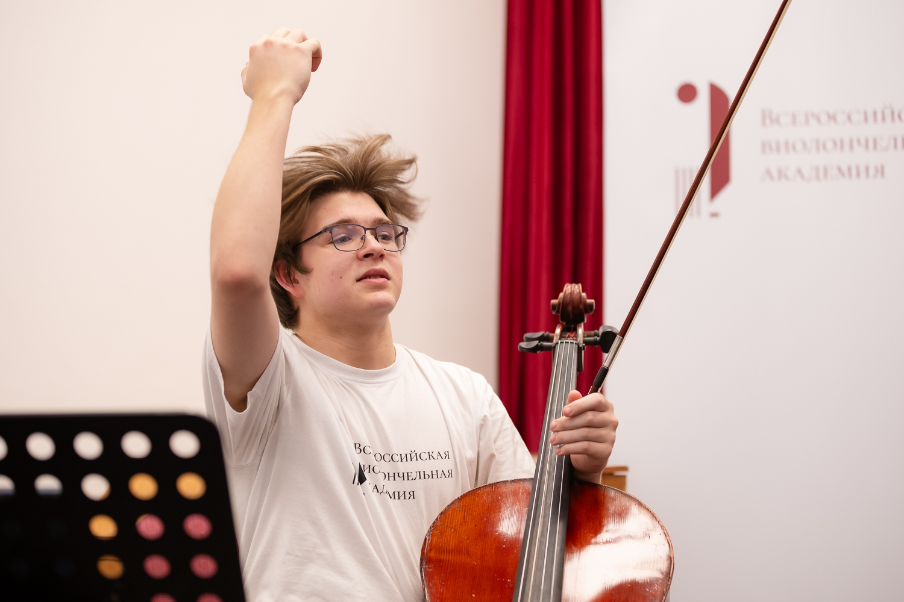
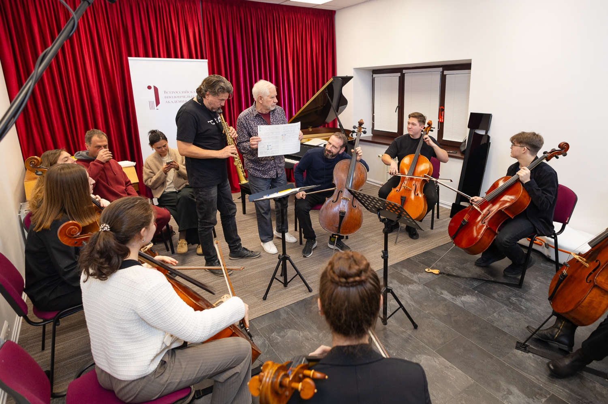
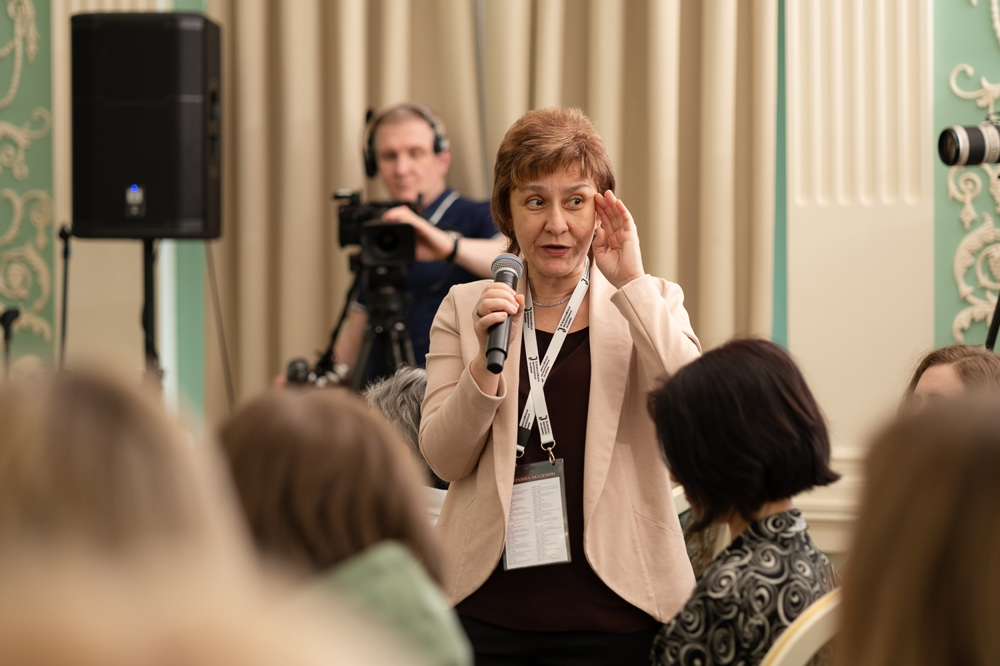
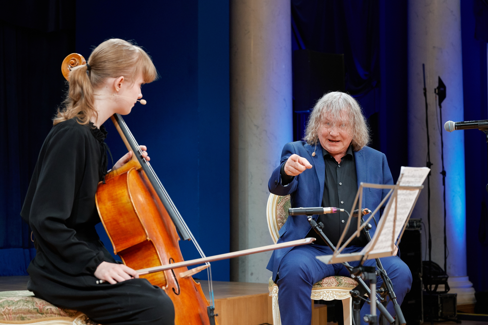
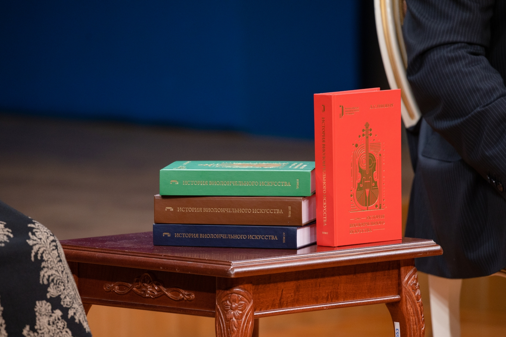
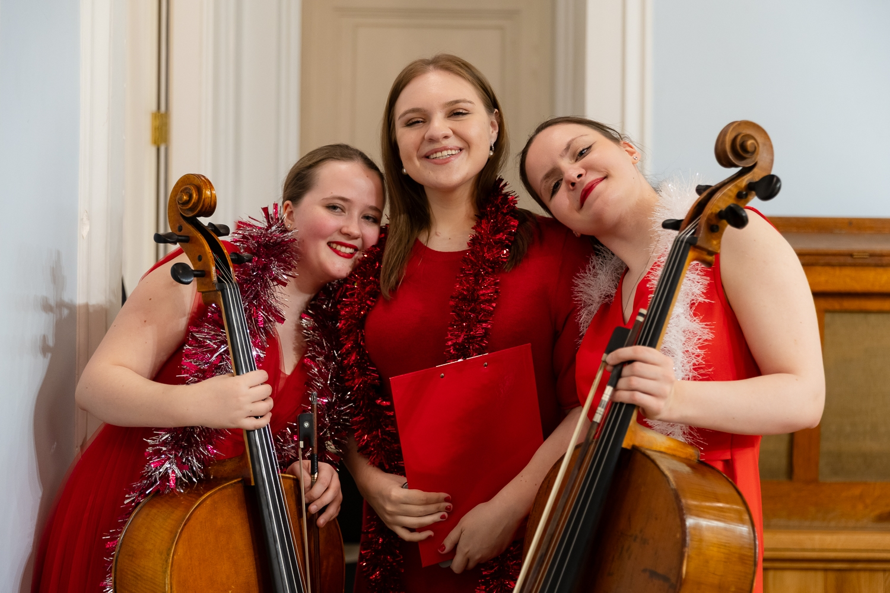
Продолжить знакомство
У Академии уже есть своя история — от первого интернет-сообщества до постоянно действующей институции. О том, как всё складывалось и какие принципы остаются неизменными, можно прочитать в соседних разделах.